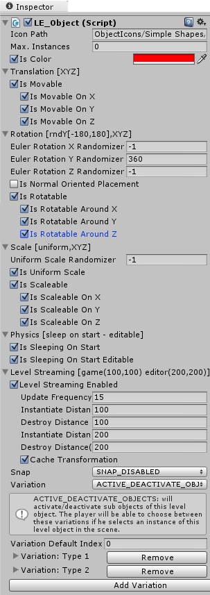

General properties of the 'LE_Object':
-
Icon Path: Resource path of the object's icon texture, which will be displayed in the object selection. The texture will be generated from Unity's built-in preview and this property will be set automatically later. However, if you want to set custom icons you can use this property. There is no direct reference (only a string) to the texture here, because there is no need to load the texture outside the level editor (no icon needed ingame).
-
Max. Instances: if value is not 0 then the number of instances of this object in a level will be limited to the value of this property. For example if some of your objects are very detailed then you will want to limit the maximal count, because of performance reasons. Another example is the start position of the player, since it should exist only once. No more objects of this type can be drag&dropped or cloned into the level once the limit is reached.
-
Is Color: a color picker will be displayed in the level editor if this value is set to true. Additionally, a default color can be specified in the 'Color' property. Modifies the '_Color' property of all materials in all renderers including those in children.
-
Color: default color. Will be applied only if 'Is With Color Property' is set to true. Modifies the '_Color' property of all materials in all renderers including those in children.
Translation properties of the 'LE_Object':
-
Is Movable: move handle will be displayed when this object is selected in the level editor if this property is true.
-
Is Movable On X: move handle will have x axis if this property is true.
-
Is Movable On Y: move handle will have y axis if this property is true.
-
Is Movable On Z: move handle will have z axis if this property is true.
Rotation properties of the 'LE_Object':
-
Euler Rotation [X,Y,Z] Randomizer: if greater than 0 then the euler rotation (0°-360°) on the [X, Y, Z] axis of this object will be randomized when the object is placed. The euler rotation will be increased or decreased by a value between 0 and +- half of the value. For example, trees can use this value to make a forest look more varied.
-
Is Normal Oriented Placement: if true the object will be rotated to fit the surface normal when placed. For example when a car is drag and dropped on a steep hill the player will probably want it to touch the ground with all four wheels and not hang half in the hill. With this property set to true the car will be rotated so that its up vector will be equal to the normal of the hill. Applied also if the object is not marked as rotatable.
-
Is Rotatable: rotate handle will be displayed when this object is selected in the level editor if this property is true.
-
Is Rotatable Around X: rotate handle will have x axis if this property is true.
-
Is Rotatable Around Y: rotate handle will have y axis if this property is true.
-
Is Rotatable Around Z: rotate handle will have z axis if this property is true.
Scale properties of the 'LE_Object':
-
Uniform Scale Randomizer: if this value is greater than 0 then the scale of this object will be randomized when the object is placed. The random scale change is always uniform, but applied only on scaleable axes. The scale will be increased or descresed by a value between 0 and +- half of the value. For example trees can use this value to make a forest look more varied.
-
Is Uniform Scale: if this property is true then the scale handle will have only one axis. Scaling this axis will scale the object on all scaleable axes at same rate.
-
Is Scaleable: scale handle will be displayed when this object is selected in the level editor if this property is true.
-
Is Scaleable On X: scale handle will have x axis if this property is true.
-
Is Scaleable On Y: scale handle will have y axis if this property is true.
-
Is Scaleable On Z: scale handle will have z axis if this property is true.
|
|

|